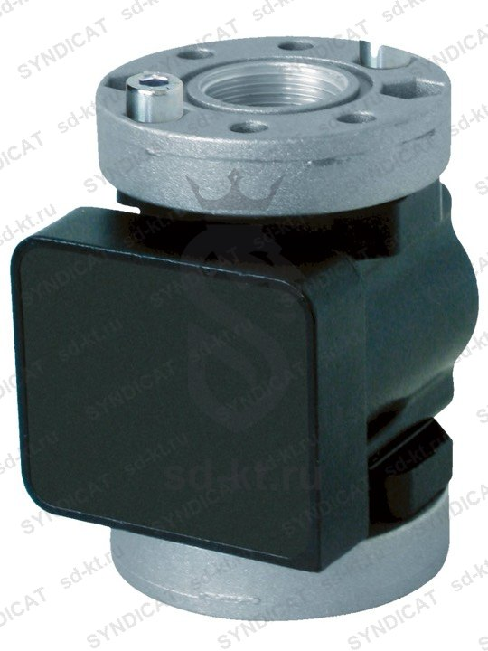

Импульсный расходомер Piusi K600/3 для ДТ- без дисплея
PIUSI (Италия)
Раздел: с импульсным выходом · АЗС
| Класс точности | 0,5% |
| Тип жидкости | Дизель |
Цена и наличие — по запросу. Поставляем оригинал и аналоги. Доставка по России.
Описание
Импульсный расходомер Piusi K600/3 для ДТ- без дисплея производства PIUSI (Италия) — позиция из раздела «с импульсным выходом» для АЗС. Компания SYNDICAT поставляет оборудование и комплектующие для автозаправочных и газозаправочных станций по всей России. Цена и наличие «Импульсный расходомер Piusi K600/3 для ДТ- без дисплея» — по запросу: оставьте заявку или позвоните, подберём оригинал или аналог и рассчитаем доставку.